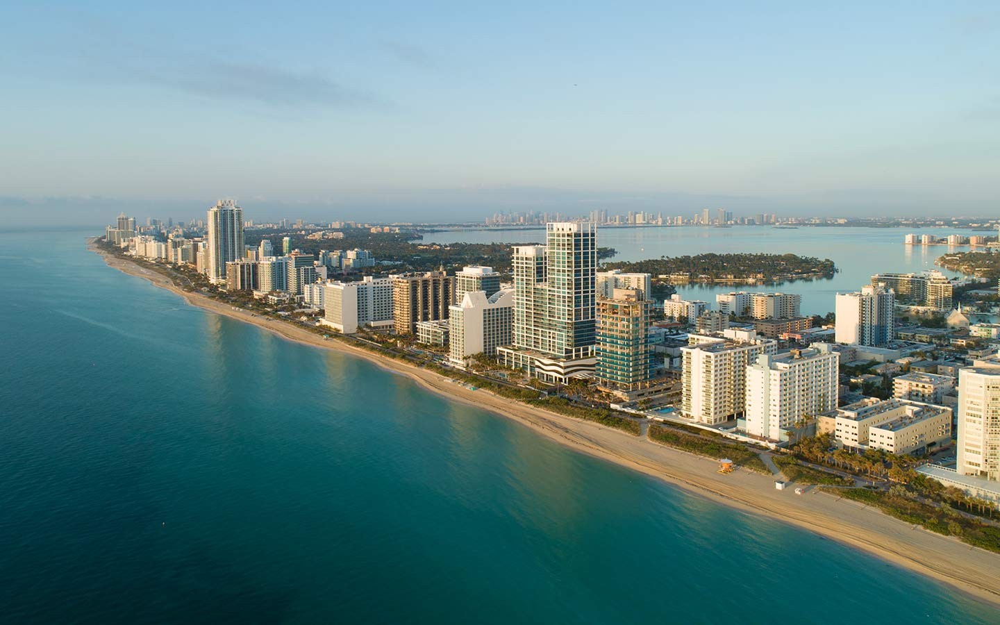

By late January, Alex Azar had already offered to send a team of U.S. health experts to China multiple times but had not received their approval. Nor had the WHO yet been to China to perform its own investigation despite weeks of requests. Meanwhile, on January 28, the CDC updated its China travel recommendations to level 3, its highest alert. Secretary of Health and Human Services Alex Azar, submitted names of U.S. experts to the WHO and said the U.S. would provide $105 million in funding.

 click here to go to form
click here to go to form